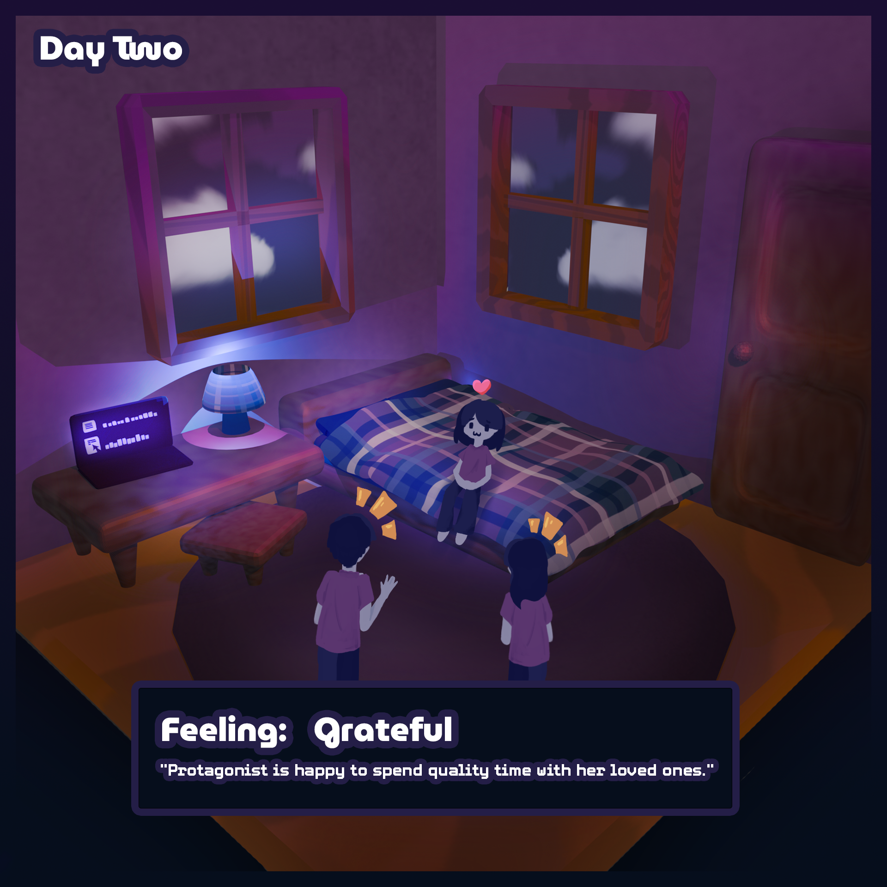

The protagonist is enjoying her time with her family, but she is starting to feel a little bit guilty about not playing the new
game or studying for her exams. She has one more full day to prepare for her midterms, but she also wants to have fun with her
family while they are still around.
